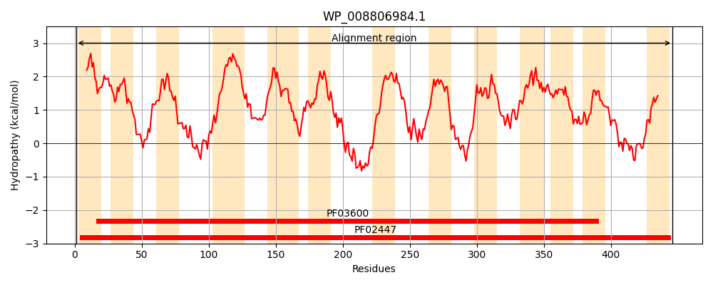
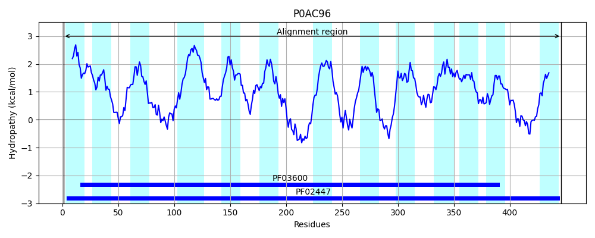
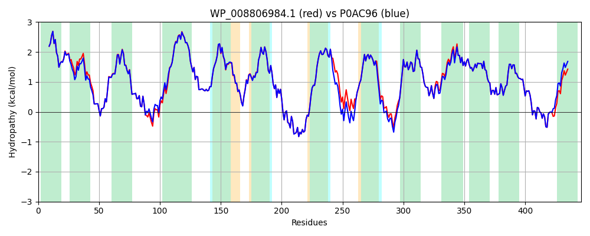

Hit Accession: P0AC96
Hit TCID: 2.A.8.1.8
Hit Description: gnl|BL_ORD_ID|8734 gnl|TC-DB|P0AC96|2.A.8.1.8 Low-affinity gluconate transporter OS=Escherichia coli (strain K12) GN=gntU PE=1 SV=1
Mach Len: 446
e:0.000000
Query TMS Count : 13
Hit TMS Count: 13
TMS-Overlap Score: 11.700000
Predicted Substrates:CHEBI:24265;gluconate
BLAST Alignment:
Score: 2185 , Bit scores: 846 bits, E-value: 0.0e+00, Alignment length: 446, Percentage identity: 97
Query: 1 MSTLTLVLTAVGSVLLLLFLVMKARMHAFVALMVVSIGAGLFSGMPLDKIAATMEKGMGGTLGFLAIVVALGAMFGKILHETGAVDQIAVKMLKSFGHNRAHYAIGLAGLICALPLFFEVAIVLLISVAFSMARHTGTNLVKLVIPLFAGVAAAAAFLLPGPAPMLLASQMHADFGWMILIGLCAAIPGMIIAGPLWGNFISRYVELHIPDDISEPHLGEGKMPSFGFSLSLILLPLVLVGLKTIAARFVPVGSTAYEWFEFIGHPFTAILVACLVAIYGLAMRQGMAKDRVMEICGHALQPAGIILLVIGAGGVFKQVLVDSGVGPALGEALTGLGLPIAITCFVLAAAVRIIQGSATVACLTAVGLVMPVIEQLNYSGAQMAALSICIAGGSIVVSHVNDAGFWLFGKFTGATEAQTLKTWTMMETILGTTGAIVGMIAFQLLS 446
M+TLTLVLTAVGSVLLLLFLVMKARMHAF+ALMVVS+GAGLFSGMPLDKIAATMEKGMGGTLGFLA+VVALGAMFGKILHETGAVDQIAVKMLKSFGH+RAHYAIGLAGL+CALPLFFEVAIVLLISVAFSMARHTGTNLVKLVIPLFAGVAAAAAFL+PGPAPMLLASQM+ADFGWMILIGLCAAIPGMIIAGPLWGNFISRYVELHIPDDISEPHLGEGKMPSFGFSLSLILLPLVLVGLKTIAARFVP GSTAYEWFEFIGHPFTAILVACLVAIYGLAMRQGM KD+VMEICGHALQPAGIILLVIGAGGVFKQVLVDSGVGPALGEALTG+GLPIAITCFVLAAAVRIIQGSATVACLTAVGLVMPVIEQLNYSGAQMAALSICIAGGSIVVSHVNDAGFWLFGKFTGATEA+TLKTWTMMETILGT GAIVGMIAFQLLS
Sbjct: 1 MTTLTLVLTAVGSVLLLLFLVMKARMHAFLALMVVSMGAGLFSGMPLDKIAATMEKGMGGTLGFLAVVVALGAMFGKILHETGAVDQIAVKMLKSFGHSRAHYAIGLAGLVCALPLFFEVAIVLLISVAFSMARHTGTNLVKLVIPLFAGVAAAAAFLVPGPAPMLLASQMNADFGWMILIGLCAAIPGMIIAGPLWGNFISRYVELHIPDDISEPHLGEGKMPSFGFSLSLILLPLVLVGLKTIAARFVPEGSTAYEWFEFIGHPFTAILVACLVAIYGLAMRQGMPKDKVMEICGHALQPAGIILLVIGAGGVFKQVLVDSGVGPALGEALTGMGLPIAITCFVLAAAVRIIQGSATVACLTAVGLVMPVIEQLNYSGAQMAALSICIAGGSIVVSHVNDAGFWLFGKFTGATEAETLKTWTMMETILGTVGAIVGMIAFQLLS 446 | Protein Hydropathy Plots: |
|---|
|  |  |
Pairwise Alignment-Hydropathy Plot:
|
|---|
|  |